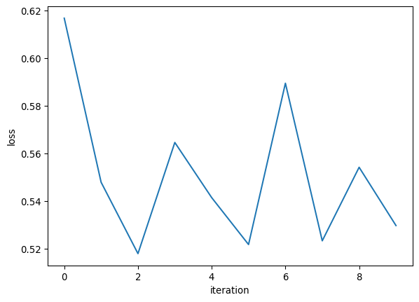
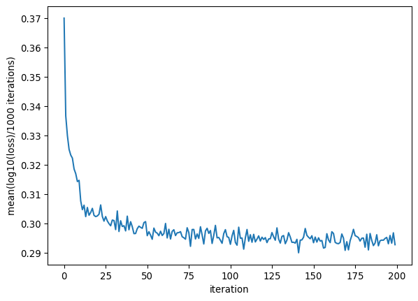

import random
import torch
import torch.nn as nn
import torch.nn.functional as F
import torch.optim as optim
from torch.utils.data import DataLoader
from torch.optim.lr_scheduler import LambdaLR
import matplotlib.pyplot as pltImplement a character prediction n-gram model directly using pytorch modules - version 5
Introduction
In this notebook, I will implement the custom model developed in version 4 using modules directly from pytorch. I will use an MLP-type network with several layers including BatchNorm.
Note: I made a very interesting error where in the training data, I did not end my words with the end character, which is a * in this notebook. Therefore, the model assigned very very small probability to ending the word and gave really long strings as a result. It’s important to make sure that the training data is actually representative of what we need. Pay special attention to beginning and end of line characters.
Instal libraries
Get the data
with open("data/names.txt") as file:
words = file.read().splitlines()
random.shuffle(words)
print("Total words in the data", len(words))Total words in the data 55649Create the training vocabulary with a mapping from characters to indices and vice versa
all_chars = sorted(list(set("".join(words)))+['*'])
stoi = {s:i for i,s in enumerate(all_chars)}
itos = {i:s for s,i in stoi.items()}Set some paramters
vocab_size = len(all_chars)
print(vocab_size)
context_length = 3
mini_batch_size = 32
embed_size = 10 # Size of embedding vector
n_hidden = 10030Create training data for the model
Build training, validation and test data using the appropriate context length
def build_dataset(words):
xs, ys = [], []
for word in words:
#print(word)
word = word+'*'
context = ['*']*context_length
context_ind = [stoi[ch] for ch in context]
for ch in word:
xs.append([stoi[c] for c in context])
ys.append(stoi[ch])
#print(''.join(context), ch)
context = context[1:]+[ch]
xs = torch.tensor(xs)
ys = torch.tensor(ys)
return xs, ys
n1 = int(0.8*len(words))
n2 = int(0.9*len(words))
#n1, n2
xstr, ystr = build_dataset(words[:n1])
xsval, ysval = build_dataset(words[n1:n2])
xstest, ystest = build_dataset(words[n2:])
#xstr.shape, ystr.shape
print("Total training examples", ystr.nelement())
print(f'Training data size: {ystr.nelement()}\nValidation data size: {ysval.nelement()}\nTest data size: {ystest.nelement()}')Total training examples 404791
Training data size: 404791
Validation data size: 50471
Test data size: 50430Initialize the neural network
torch.manual_seed(42)
# Implement the simplest MLP model
model = nn.Sequential(
nn.Embedding(vocab_size, embed_size),
nn.Flatten(),
nn.Linear(context_length*embed_size, n_hidden, bias = False), nn.BatchNorm1d(n_hidden), nn.Tanh(),
nn.Linear(n_hidden, n_hidden, bias = False), nn.BatchNorm1d(n_hidden), nn.Tanh(),
nn.Linear(n_hidden, n_hidden, bias = False), nn.BatchNorm1d(n_hidden), nn.Tanh(),
nn.Linear(n_hidden, n_hidden, bias = False), nn.BatchNorm1d(n_hidden), nn.Tanh(),
nn.Linear(n_hidden, n_hidden, bias = False), nn.BatchNorm1d(n_hidden), nn.Tanh(),
nn.Linear(n_hidden, vocab_size, bias = False), nn.BatchNorm1d(vocab_size)
)
parameters = model.parameters()
# Turn requires_grad = true for all parameters in the model
for p in model.parameters():
p.requires_grad = True
with torch.no_grad():
# make the last layer less confident
# for name, param in model[6].named_parameters():
# print(name, param)
model[6].weight *= 0.1
for layer in model.modules():
if isinstance(layer, nn.Linear):
layer.weight *= 5/3
print('Total number of parameters:', sum(p.nelement() for p in model.parameters())) # If I use parameters variable directly, this line of code does not work. Why??
# for p in model.parameters():
# print(p.shape)Total number of parameters: 47360Train the neural network
I can also use the optimizer object from torch.optim, but I am implementing the training loop as in v4 first.
max_iter = 10
lossi = []
for i in range(max_iter):
# Sample from the full training data to run the iteration on a minibatch
ix = torch.randint(0, xstr.shape[0], size = (mini_batch_size,))
#print(ix)
Xb, Yb = xstr[ix], ystr[ix]
#print(Xb.shape, Yb.shape)
# Forward pass
logits = model(Xb)
loss = F.cross_entropy(logits, Yb)
print(loss)
# Backward pass
for p in model.parameters():
p.grad = None
loss.backward()
# update parameters
lr = 0.1
if i < 10000:
lr = lr
elif 10000 <= i < 50000:
lr = lr/10
else:
lr = lr/100 # step learning rate decay
for p in model.parameters():
p.data += -lr * p.grad
# collect statistics
lossi.append(loss.log10().item())
# track statistics
if i % 10000 == 0:
print(f'{i:7d}/{max_iter:7d}: {loss.item():.4f}')
# if i >= 9:
# break
#break
#print(loss.item())tensor(4.1371, grad_fn=<NllLossBackward0>)
0/ 10: 4.1371
tensor(3.5317, grad_fn=<NllLossBackward0>)
tensor(3.2968, grad_fn=<NllLossBackward0>)
tensor(3.6698, grad_fn=<NllLossBackward0>)
tensor(3.4797, grad_fn=<NllLossBackward0>)
tensor(3.3258, grad_fn=<NllLossBackward0>)
tensor(3.8855, grad_fn=<NllLossBackward0>)
tensor(3.3378, grad_fn=<NllLossBackward0>)
tensor(3.5830, grad_fn=<NllLossBackward0>)
tensor(3.3872, grad_fn=<NllLossBackward0>)plt.plot(lossi)
plt.ylabel("loss")
plt.xlabel("iteration")Text(0.5, 0, 'iteration')
For implementing batch gradient descent, we can manually sample the indices as above and pass the sampled indices from the training data to the model or we can use the DataLoader class from pytorch.
There is also a collate_fn argument in data loader that can be used to do additional dataset pre-processing, but we do not need that in this workflow. For details of how to use the collate_fn within DataLoader, see the Pytorch tutorial notebook.
In this workflow, since we do not want to iterate over the whole dataset batch-wise, there is no need to use DataLoader.
data = list(zip(xstr[:100], ystr[:100]))
loader = DataLoader(dataset = data, batch_size = mini_batch_size, shuffle = True) # loads up all the batches until we iterate over all of them. For us, we need to access only the first batch since we are not iterating over all the batches
counter = 0
for Xb, Yb in loader:
print(counter)
print(Yb)
counter +=10
tensor([ 4, 12, 17, 23, 4, 1, 11, 24, 17, 17, 4, 4, 4, 14, 16, 4, 4, 21,
12, 4, 16, 8, 21, 21, 25, 25, 11, 14, 4, 5, 21, 21])
1
tensor([22, 1, 11, 22, 1, 11, 22, 11, 1, 12, 17, 0, 4, 1, 22, 28, 1, 4,
7, 12, 4, 17, 24, 25, 24, 12, 16, 11, 17, 5, 1, 15])
2
tensor([ 4, 22, 25, 24, 4, 4, 4, 12, 11, 1, 14, 12, 1, 15, 4, 21, 17, 11,
17, 22, 17, 16, 4, 14, 4, 15, 1, 11, 4, 21, 24, 8])
3
tensor([23, 4, 18, 17])Implement the training using the torch.optim method in pytorch.
- We can also use a learning rate scheduler from some pre-defined functions given in class
torch.optim.lr_scheduler.
def learning_rate_schedule(epoch):
if epoch < 10000:
return 1
elif epoch < 50000 :
return 0.1
else:
return 0.01# Define the optimiser
learning_rate = 0.1
sgd_optimiser = optim.SGD(model.parameters(), lr = learning_rate)
lr_scheduler = LambdaLR(sgd_optimiser, lr_lambda=learning_rate_schedule)
# Define the loss function
loss_function = nn.CrossEntropyLoss()
# Set the training loop
n_epoch = 200000 # number of training iterations, equivalent to max_iter in the above loop
lossi = []
print("Initial learning rate: ", sgd_optimiser.param_groups[0]['lr'])
for epoch in range(n_epoch):
# Set the gradients to zero
sgd_optimiser.zero_grad()
# Get the mini-batch data
ix = torch.randint(0, xstr.shape[0], size = (mini_batch_size,))
Xb, Yb = xstr[ix], ystr[ix]
# Get the model predictions
logits = model(Xb)
# Get the loss
loss = loss_function(logits, Yb)
# Print the stats
#print(f'Epoch {epoch}: training loss: {loss:.4f}')
if epoch % 10000 == 0:
print(f'{epoch:7d}/{n_epoch:7d}: {loss.item():.4f}: lr={sgd_optimiser.param_groups[0]["lr"]:.5f}')
# collect statistics
lossi.append(loss.log10().item())
# compute the gradients
loss.backward()
# take a step to optimize the parameters
sgd_optimiser.step()
# Take a step for the lr
lr_scheduler.step()Initial learning rate: 0.1
0/ 200000: 3.3176: lr=0.10000
10000/ 200000: 1.8122: lr=0.01000
20000/ 200000: 2.2096: lr=0.01000
30000/ 200000: 1.8301: lr=0.01000
40000/ 200000: 1.9333: lr=0.01000
50000/ 200000: 1.6691: lr=0.00100
60000/ 200000: 1.9079: lr=0.00100
70000/ 200000: 1.8249: lr=0.00100
80000/ 200000: 2.3203: lr=0.00100
90000/ 200000: 2.1067: lr=0.00100
100000/ 200000: 1.6328: lr=0.00100
110000/ 200000: 1.9829: lr=0.00100
120000/ 200000: 2.0875: lr=0.00100
130000/ 200000: 1.8950: lr=0.00100
140000/ 200000: 1.9691: lr=0.00100
150000/ 200000: 1.7519: lr=0.00100
160000/ 200000: 1.6201: lr=0.00100
170000/ 200000: 1.5660: lr=0.00100
180000/ 200000: 1.8559: lr=0.00100
190000/ 200000: 1.9776: lr=0.00100Evaluate the performance of the network
plt.plot(torch.tensor([lossi]).view(-1, 1000).mean(dim = 1))
plt.ylabel("mean(log10(loss)/1000 iterations)")
plt.xlabel("iteration")Text(0.5, 0, 'iteration')
Put the model in evaluation mode.
model.eval() # Make sure to put the model in evaluation mode
eval_data_dict = {
"train": (xstr, ystr),
"val": (xsval, ysval),
"test": (xstest, ystest)
}
@torch.no_grad()
def calculate_split_loss(split):
x,y = eval_data_dict[split]
logits = model(x)
loss = F.cross_entropy(logits, y)
print(split, loss.item())
calculate_split_loss("train")
calculate_split_loss("val")train 1.9354958534240723
val 1.9438786506652832Make predictions
start_chr = "*"
for _ in range(20):
context = [stoi[start_chr]]*context_length
out = [start_chr]*context_length
#print(context)
while True:
x = torch.tensor([context])
#print(x.shape)
logits = model(x)
#print(logits.shape)
probs = F.softmax(logits, dim = 1)
ind = torch.multinomial(probs, num_samples = 1, replacement = True).item()
if (ind == stoi[start_chr]):
out.append(itos[ind])
break
else:
out.append(itos[ind])
context = context[1:]+[ind]
#print(context)
print(''.join(out))***tha*
***asthishan*
***harthi*
***sahjayathathivathuohethinaa*
***vijayashikh*
***dhavi*
***ratha*
***krishan*
***anbakanna*
***hira*
***dhitharna*
***thin*
***sau*
***raja*
***niharan*
***bruthik*
***neamini*
***kumathaf*
***nuvarunam*
***jani*